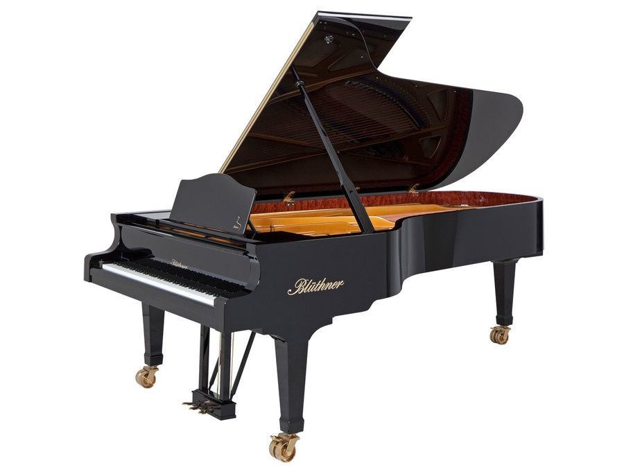
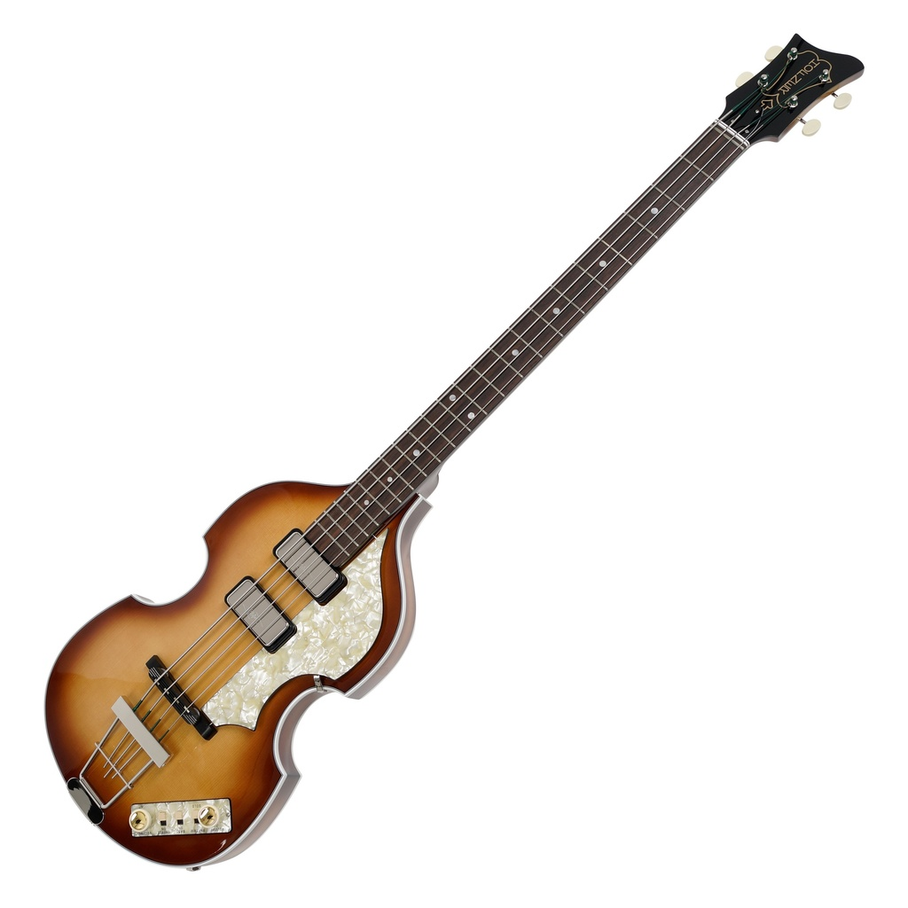
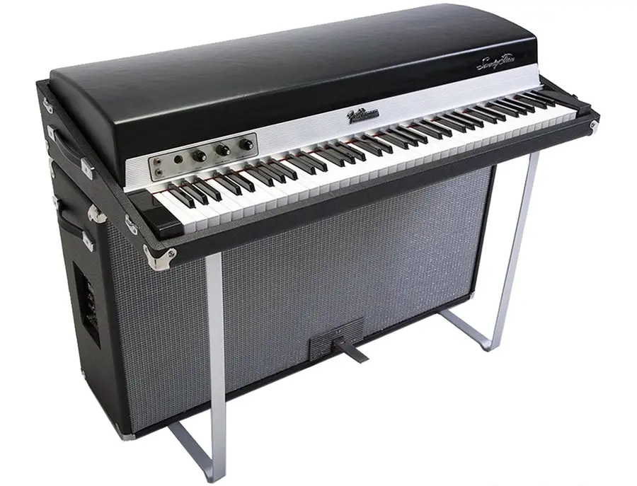

Bluthner Grand Paino
blah blah blah

1963 Hofner 500/1 Violin Bass
A hollow electric violin-shaped bass created by Hofner and popularized by Paul McCartney of the Beatles.

Rosewood Telecaster
Blah blah blah

Epiphone Casino
blah blah blah

Ludwig Hollywood Kit
blah blah blah

Fender Rhodes Suitcase 73
blah blah blah